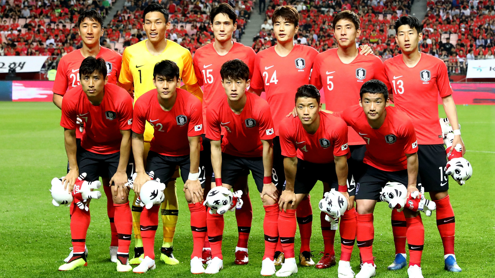

Seleção da Coréia do Sul nas Copas do Mundo
A seleção sul-coreana participou de sua 10ª edição da Copa do Mundo de futebol em 2018, sendo eliminada na Primeira Fase. Nas primeiras cinco participações a Coreia do Sul não passou da primeira fase. Co-sede da Copa do Mundo de 2002 com o Japão a Coreia do Sul chegou ao inédito 4º lugar. Nas Copas do Mundo de 2006 a Coreia do Sul retornou a rotina de ser eliminada na 1ª Fase. Em 2010, pela primeira vez na história dos Mundiais as duas Coreias participaram de uma mesma edição. Na Copa do Mundo de 2010 a Coreia do Norte saiu na primeira fase e a Coreia do Sul nas oitavas-de-final. Em 2014 a Coreia do Sul foi eliminada na 1ª Fase. Em 2018, os sul-coreanos também não passaram da Primeira Fase, mas fizeram história ao eliminar no terceiro jogo a Alemanha, então campeã mundial.
A Copa do Mundo de 2002 foi um sinal de rápido progresso feito no futebol Coreano. Certamente, ter sido uma das sedes do evento com o Japão é o resultado da paixão e do interesse do povo Coreano pelo futebol. Liderados pelo técnico neerlandês Guus Hiddink, e com uma grande performance de uma estrela em ascensão do futebol asiático chamado Park Ji-Sung, a seleção deixou o mundo boquiaberto por ter eliminado uma grande e tradicional força do futebol mundial, a Itália e avançando rumo às quartas-de-final e eliminado uma outra grande seleção nessa fase, a Espanha em uma polémica e emocionante disputa de pênaltis, conseguindo assim uma vaga inédita para a tão sonhada fase de semifinais, a primeira de um time asiático na história do torneio. Esse feito foi o resultado de um grande apoio e engajamento de todo o povo Coreano que ama tanto o futebol. O entusiasmo da torcida vermelha, os "diabos vermelhos", também surpreenderam os espetadores. Agora o futebol da Coreia se situa na linha de partida de uma nova era.
